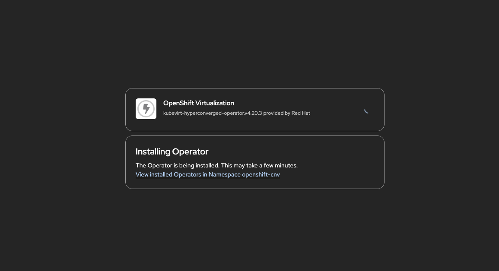

OpenShift Virtualization Operator のインストールと設定
概要
このチュートリアルでは、OpenShift Virtualization Operator のインストールと設定方法を説明します。これにより、OpenShift クラスター上でコンテナワークロードと並行して仮想マシンを実行できます。OpenShift Virtualization は、アップストリームの KubeVirt プロジェクトをベースにしており、エンタープライズグレードの仮想化機能を提供します。
前提条件
-
OpenShift 4.18+ がサポートされているプラットフォームにインストールされ、稼働していること
-
クラスター管理者アクセス: Operator をインストールし、クラスターリソースを設定するために必要です
テスト済みバージョン：
OpenShift 4.18, 4.19, 4.20, 4.21
ハードウェアおよびソフトウェア要件
OpenShift Virtualization をインストールする前に、クラスターがハードウェア、オペレーティングシステム、ストレージ、およびネットワークの要件を満たしていることを確認してください。
CPU 仕様、サポートされているプラットフォーム、ストレージに関する考慮事項、リソースオーバーヘッドを含む詳細な要件については、OpenShift Virtualization 用にクラスターを準備する を参照してください。
| ストレージ設定については、Operator のインストール完了後に デフォルトストレージクラスの設定 を参照してください。 |
Web コンソールを使用したインストール
Web コンソールは、OpenShift Virtualization のガイド付きインストール体験を提供します。
ステップ 1: OperatorHub へのアクセス
-
cluster-admin権限を持つユーザーとして OpenShift Web コンソールにログインします -
Operators → OperatorHub に移動します

-
Filter by keyword フィールドに
Virtualizationと入力します
ステップ 2: Operator のインストール
-
Red Hat ソースラベルが付いた OpenShift Virtualization タイルを選択します
-
Operator の情報を確認し、Install をクリックします

-
Install Operator ページで、デフォルト設定のまま Install をクリックします

| 手動承認は利用可能ですが、サポートされていないバージョン組み合わせを実行するリスクがあるため推奨されません。影響を十分に理解している場合にのみ、手動を選択してください。 |
-
Operator がインストールされるのを待ちます



コマンドラインを使用したインストール
自動デプロイメントまたは Web コンソールにアクセスできない環境の場合は、CLI インストール方法を使用します。
ステップ 1: Namespace、OperatorGroup、および Subscription の作成
必要なすべてのリソースを含む単一のマニフェストファイルを作成します。
oc apply -f - <<EOF
apiVersion: v1
kind: Namespace
metadata:
name: openshift-cnv
---
apiVersion: operators.coreos.com/v1
kind: OperatorGroup
metadata:
name: kubevirt-hyperconverged-group
namespace: openshift-cnv
spec:
targetNamespaces:
- openshift-cnv
---
apiVersion: operators.coreos.com/v1alpha1
kind: Subscription
metadata:
name: hco-operatorhub
namespace: openshift-cnv
spec:
source: redhat-operators
sourceNamespace: openshift-marketplace
name: kubevirt-hyperconverged
channel: stable
installPlanApproval: Automatic
EOFステップ 2: Operator のインストールの検証
Operator がインストールされ、そのステータスを確認するまで待ちます。
# Watch the CSV status until it shows Succeeded
oc get csv -n openshift-cnv -wインストールが完了した際の期待される出力：
NAME DISPLAY VERSION REPLACES PHASE kubevirt-hyperconverged-operator.v4.20.3 OpenShift Virtualization 4.20.3 kubevirt-hyperconverged-operator.v4.20.1 Succeeded
Succeeded と表示されたら Ctrl+C を押して監視を停止します。
ステップ 3: HyperConverged リソースの作成
HyperConverged カスタムリソースをデプロイして、インストールを完了します。
oc apply -f - <<EOF
apiVersion: hco.kubevirt.io/v1beta1
kind: HyperConverged
metadata:
name: kubevirt-hyperconverged
namespace: openshift-cnv
spec:
EOF| 上記の最小限の HyperConverged spec は、すべてのデフォルト設定を使用します。高度な設定オプションについては、https://docs.openshift.com/container-platform/latest/virt/install/installing-virt.html#virt-customizing-storage-profile_installing-virt[公式ドキュメント,window=_blank] を参照してください。 |
OpenShift Virtualization のアンインストール
クラスターから OpenShift Virtualization を削除する必要がある場合は、以下の手順を順番に実行してください。アンインストールプロセスでは、すべての仮想化コンポーネントを正常に終了させるため、数分かかります。
| Operator サブスクリプションを削除するだけでは、デプロイされたリソースは削除されません。すべてのコンポーネントを適切にクリーンアップするには、まず HyperConverged リソースを削除する必要があります。 |
ステップ 1: すべての仮想マシンの削除
アンインストールする前に、すべての VM が停止され、削除されていることを確認してください。
# List all VMs across namespaces
oc get vm -A
# Delete VMs (repeat for each namespace)
oc delete vm --all -n <namespace>警告：実行中の VM は、アンインストール中に強制終了されます。
ステップ 2: HyperConverged リソースの削除
このステップでは、すべての OpenShift Virtualization コンポーネントを削除します。
oc delete hyperconverged kubevirt-hyperconverged -n openshift-cnvクリーンアップの進行状況を監視します。
# Watch pods being terminated (this may take 5-10 minutes)
oc get pods -n openshift-cnv -w続行する前に、すべてのポッドが終了するまで待ちます。
次のステップ
-
virtctl の基本を学ぶ - VM 管理用のコマンドラインツール
-
デフォルトストレージの設定 - VM 用ストレージを設定します
-
VM 用の静的 IP の設定 - cloud-init、DHCP 予約、ゲストエージェント、Sysprep を使用した静的 IP 設定